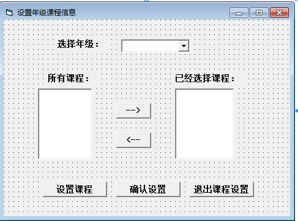

大家先来看一下它的窗口布局

年级是默认加载的，但是当我们选择年级时，如果此年级已经设置好了课程，那么在已经选择课程中应该显示出来，当我们单击设置课程时，此年级的所有课程也应该显示，当然这些都很简单
第一个显示所选课程我们只需在单击选择年级时，执行
ListSelectCourse(1).Clear '先清空列表
'从年级课程里查找出相同年级的信息，将课程名称添加到列表里
txtsql = "select*from gradecourse_info where grade='" & ComboGra.Text & "'"
Set mrc = executesql(txtsql, msgtext)
If Not mrc.EOF Then
For i = 1 To mrc.RecordCount
ListSelectCourse(1).AddItem mrc.Fields(1)
mrc.MoveNext
Next
End If
mrc.Close
第二个显示，执行
'先将以前的课程清空，在重新添加所有课程
ListAllCourse(0).Clear
ListAllCourse(0).Enabled = True
ListSelectCourse(1).Enabled = True
CmdModify.Enabled = True
txtsql = "select * from course_info"
Set mrc = executesql(txtsql, msgtext) '添加信息
While (mrc.EOF = False)
ListAllCourse(0).AddItem mrc.Fields(1)
mrc.MoveNext
Wend
mrc.Close 但是，当我们单击确认设置时，它是如何避免年级重复，如何思考的，下面我们来看看这段代码
txtsql = "select * from gradecourse_info where grade='" & ComboGra.Text & "'"
Set mrc = executesql(txtsql, msgtext)
If mrc.EOF Then '如果是新添加的年级则将已选的课程添加进去
For i = 1 To ListSelectCourse(1).ListCount
mrc.AddNew
mrc.Fields(0) = Trim(ComboGra.Text)
mrc.Fields(1) = Trim(ListSelectCourse(1).List(i - 1))
mrc.Update
Next
mrc.Close
MsgBox "设置课程成功"
Else
mrc.Close '如果是已存在的年级就将这个年级删除再重新添加
txtsql = "delete from gradecourse_info where grade='" & ComboGra.Text & "'"
Set mrc = executesql(txtsql, msgtext)
txtsql = "select * from gradecourse_info"
Set mrc = executesql(txtsql, msgtext)
For i = 1 To ListSelectCourse(1).ListCount
mrc.AddNew
mrc.Fields(0) = Trim(ComboGra.Text)
mrc.Fields(1) = Trim(ListSelectCourse(1).List(i - 1))
mrc.Update
Next
mrc.Close
'mrcc.Close
MsgBox "设置课程成功"
End If